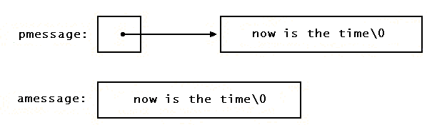

Указатели и символьные строки
Строковая константа, написанная в виде
"Я строка"
представляет собой массив символов. Во внутреннем представлении этот массив заканчивается нулевым символом '\0', по которому программа может найти конец строки. Число занятых ячеек памяти на одну больше, чем количество символов, помещенных между двойными кавычками.
Чаще всего строковые константы используются в качестве аргументов функций, как, например, в
printf("Здравствуй, мир\n");
Когда такая символьная строка появляется в программе, доступ к ней осуществляется через символьный указатель; т.е. printf получает указатель на начало массива символов. Точнее, доступ к строковой константе осуществляется через указатель на ее первый элемент.
Строковые константы нужны не только в качестве аргументов функций. Если, например, переменную pmessage объявить как
char *pmessage;
то присваивание
pmessage = "now is the time";
поместит в нее указатель на символьный массив, при этом сама строка не копируется, копируется лишь указатель на нее. Операции для работы со строкой как с единым целым в Си не предусмотрены.
Существует важное различие между следующими определениями:
char amessage[] = "now is the time"; /* массив */
char *pmessage = "now is the time"; /* указатель */
amessage — это массив, имеющий такой размер, что в нем как раз помещается указанная последовательность символов и '\0'. Отдельные символы внутри массива могут изменяться, но amessage всегда указывает на одно и то же место памяти. В противоположность ему pmessage есть указатель, инициализированный так, чтобы указывать на строковую константу. Значение указателя можно изменить, и тогда последний будет указывать на что-нибудь другое. Кроме того, если вы попытаетесь изменить содержимое константы, результат будет неопределен.

Дополнительные моменты, связанные с указателями и массивами, проиллюстрируем на несколько видоизмененных вариантах двух полезных программ, взятых нами из стандартной библиотеки. Первая из них, функция strcpy(s, t), копирует строку t в строку s. Хотелось бы написать прямо s = t, но такой оператор копирует указатель, а не символы. Чтобы копировать символы, нам нужно организовать цикл. Первый вариант strcpy, с использованием массива, имеет следующий вид:
/* strcpy: копирует строку t в s;
вариант с массивом */
void strcpy(char s[], char t[])
{
int i;
i = 0;
while ((s[i] = t[i]) != '\0')
i++;
}
Для сравнения приведем версию strcpy с указателями:
/* strcpy: копирует строку t в s;
вариант 1 с указателями */
void strcpy(char *s, char *t)
{
while ((*s = *t) != '\0') {
s++;
t++;
}
}
Поскольку в функцию передаются лишь копии значений аргументов, strcpy может свободно пользоваться параметрами s и t как своими локальными переменными. Они должным образом инициализированны указателями, которые продвигаются каждый раз на следующий символ в каждом из массивов до тех пор, пока в копируемой строке t не встретится '\0'.
На практике strcpy так не пишут. Опытный программист предпочтет более короткую запись:
/* strcpy: копирует строку t в s;
вариант 2 с указателями */
void strcpy(char *s, char *t)
{
while ((*s++ = *t++) != '\0');
}
Приращение s и t здесь осуществляется в управляющей части цикла. Значением *t++ является символ, на который указывает переменная t перед тем, как ее значение будет увеличено; постфиксный оператор ++ не изменяет указатель t, пока не будет взят символ, на который он указывает. То же в отношении s: сначала символ запомнится в позиции, на которую указывает старое значение s, и лишь после этого значение переменной s увеличится. Пересылаемый символ является одновременно и значением, которое сравнивается с '\0'. В итоге копируются все символы, включая и заключительный символ '\0'.
Заметив, что сравнение с '\0' здесь лишнее (поскольку в Си ненулевое значение выражения в условии трактуется и как его истинность), мы можем сделать еще одно и последнее сокращение текста программы:
/* strcpy: копирует строку t в s;
вариант 3 с указателями */
void strcpy(char *s, char *t)
{
while (*s++ = *t++);
}
Хотя на первый взгляд то, что мы получили, выглядит загадочно, все же такая запись значительно удобнее, и следует освоить ее, поскольку в программах на Си вы будете с ней часто встречаться.
Что касается функции strcpy из стандартной библиотеки <string.h>, то она возвращает в качестве своего результата указатель на новую копию строки.
Вторая программа, которую мы здесь рассмотрим, это strcmp(s, t). Она сравнивает символы строк s и t и возвращает отрицательное, нулевое или положительное значение, если строка s соответственно лексикографически меньше, равна или больше, чем строка t. Результат получается вычитанием первых несовпадающих символов из s и t.
/* strcmp: результат < 0 при s < t,
= 0 при s == t,
> 0 при s > t */
int strcmp(char s[], char t[])
{
int i;
for (i = 0; s[i] == t[i]; i++)
if (s[i] == '\0')
return 0;
return s[i] - t[i];
}
Та же программа с использованием указателей выглядит так:
/* strcmp: результат < 0 при s < t,
= 0 при s == t,
> 0 при s > t */
int strcmp(char *s, char *t)
{
for ( ; *s == *t; s++, t++)
if (*s == '\0')
return 0;
return *s - *t;
}
Поскольку операции ++ и -- могут быть или префиксными, или постфиксными, встречаются (хотя и не так часто) другие их сочетания с операцией *. Например:
*--p
уменьшит p прежде, чем по этому указателю будет получен символ. Например, следующие два выражения:
*p++ = val; /* поместить val в стек */
val = *--p; /* поместить значение из стека в val */
являются стандартными для помещения в стек и взятия из стека (см. параграф 4.3).
Объявления функций, упомянутых в этом параграфе, а также ряда других стандартных функций, работающих со строками, содержатся в заголовочном файле <string.h>.